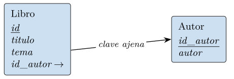
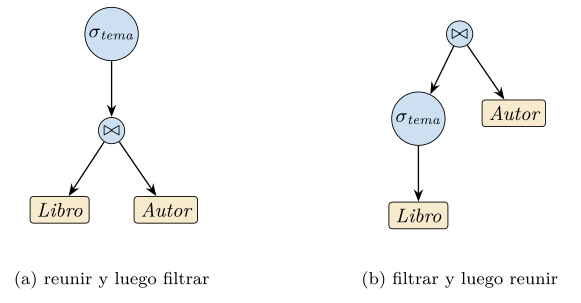
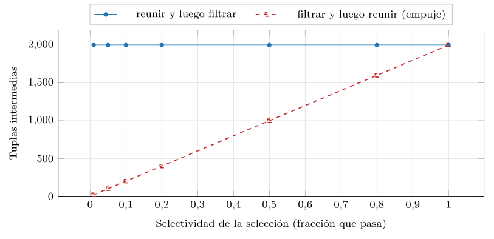

Capítulo 2. El modelo relacional
El capítulo anterior habló de tablas, atributos y claves como si su significado fuera evidente. No lo es: bajo esas palabras hay una teoría matemática precisa, y este capítulo la desarrolla. El modelo relacional, que Codd propuso en 1970 (Codd 1970), hizo por las bases de datos lo que pocas ideas han hecho por la informática: sustituyó la navegación explícita entre registros por una descripción declarativa basada en la teoría de conjuntos, de modo que el usuario dice qué dato quiere y el sistema decide cómo obtenerlo. Esa separación entre el qué y el cómo es la encarnación más pura de la independencia física del capítulo 1, y la razón de que el modelo relacional haya dominado medio siglo.
El capítulo se construye sobre una sola definición austera —la relación como conjunto de tuplas sobre un producto de dominios— y de ella extrae todo lo demás: las claves y la integridad referencial, un álgebra cuya propiedad característica es la clausura (toda operación sobre relaciones devuelve otra relación, y por eso las consultas se componen) y un cálculo declarativo equivalente en poder expresivo. Que el álgebra, procedimental, y el cálculo, declarativo, expresen exactamente lo mismo —el teorema de completitud de Codd— es el resultado que da sentido a toda la pila: el usuario escribe en términos declarativos, parecidos al cálculo, y el sistema traduce a un plan algebraico que ejecutar. Reconoceremos ahí, ya formado, el germen del optimizador de consultas que el capítulo 1 puso a trabajar.
Hay además un hilo que conviene seguir desde ahora, porque vertebra el libro entero. El modelo relacional responde siempre a la misma pregunta: qué tuplas coinciden con un criterio, donde coincidir es satisfacer una condición de igualdad sobre valores. Ese igual a es el ancla de toda la primera parte. Mucho después, la recuperación vectorial lo sustituirá por el cercano a de la similitud, y veremos que esa sustitución no es inocua: rompe justamente la clausura que aquí hace del álgebra una maquinaria componible. Entender bien el edificio relacional es, por eso, el requisito para medir lo que la búsqueda por similitud gana y lo que cuesta.
Relaciones, atributos y claves
Los sistemas anteriores al relacional —el jerárquico y el de red que el capítulo 1 situó en su genealogía— ataban la consulta a la navegación física: para hallar un dato, el programa recorría punteros entre registros en un orden que reflejaba cómo estaban almacenados. Consultar y almacenar estaban entrelazados, y cambiar lo segundo rompía lo primero. La idea de Codd (Codd 1970) fue radical en su sencillez: fundar el dato en la teoría de conjuntos y la lógica de predicados, de modo que la descripción lógica de los datos quedara divorciada de su acceso físico. Una relación es un conjunto; una consulta, una fórmula; el resultado, otro conjunto. Dónde y cómo se guarden las tuplas deja de aparecer en la consulta.
Ese divorcio es la independencia física del capítulo 1 elevada a teoría, y trae tres regalos que justifican el rigor de este capítulo. Primero, una semántica precisa: una consulta significa exactamente el conjunto que su fórmula denota, sin ambigüedad. Segundo, la optimizabilidad: como distintas expresiones pueden denotar el mismo conjunto, el sistema es libre de elegir la más barata, según se vio en la práctica del capítulo 1. Tercero, la equivalencia demostrable entre formas de preguntar, que la sección 2.7 corona. La formalidad no es un lujo académico: es la fuente de la independencia y del optimizador. Por eso el capítulo empieza, como debe, por la definición matemática.
La relación como objeto matemático
El punto de partida es deliberadamente abstracto. Cada atributo tiene asociado un dominio, el conjunto de valores que puede tomar: el dominio de un año son los enteros en un rango, el de un título las cadenas de texto. Una relación es, entonces, un subconjunto del producto cartesiano de esos dominios.
Definición (Relación). Dado un conjunto de atributos \(\{\mathit{A_1},\dots,\mathit{A_n}\}\) con dominios \(\operatorname{dom}(\mathit{A_1}),\dots,\operatorname{dom}(\mathit{A_n})\), una relación \(\mathrm{R}\) es un subconjunto finito del producto cartesiano \[\mathrm{R} \subseteq \operatorname{dom}(\mathit{A_1}) \times \cdots \times \operatorname{dom}(\mathit{A_n}).\] Cada elemento \(t \in \mathrm{R}\) es una tupla, \(t = \langle v_1,\dots,v_n \rangle\) con \(v_i \in \operatorname{dom}(\mathit{A_i})\); se escribe \(t[\mathit{A_i}] = v_i\) para la proyección de la tupla sobre un atributo.
De esta definición de una línea se siguen, sin añadir nada, dos propiedades que distinguen una relación de una tabla cualquiera de una hoja de cálculo. La primera: una relación es un conjunto, así que no contiene tuplas repetidas —dos filas idénticas son la misma tupla— y no hay un orden entre sus tuplas; hablar de «la tercera fila» no tiene sentido. La segunda: cada atributo toma un único valor de su dominio en cada tupla, un valor atómico, sin estructura interna que el modelo reconozca. Esta condición, llamada primera forma normal, es la que el capítulo 4 examinará al detalle y la que los modelos de la segunda parte relajarán al admitir documentos anidados.
Observación. La semántica de conjuntos es del modelo, no de los sistemas reales. SQL, que el capítulo 3 estudia, opera por omisión sobre multiconjuntos (admite filas duplicadas, y por eso SELECT sin DISTINCT puede repetirlas) y permite ordenar el resultado con ORDER BY. Esa brecha entre el modelo y el lenguaje no es un descuido: el duplicado y el orden tienen coste y utilidad prácticos. Pero el sustrato teórico sobre el que se razona es el conjunto, y conviene tenerlo presente cuando, más adelante, una consulta devuelva más filas de las esperadas.
Dos magnitudes describen una relación. El grado (o aridad) es su número de atributos —una propiedad del esquema, fija—; la cardinalidad es su número de tuplas, \(\lvert \mathrm{R} \rvert\) —una propiedad de la instancia, que cambia con cada operación—. Una relación de grado cero, sin atributos, es un caso límite legítimo: solo puede contener la tupla vacía o ninguna, de modo que representa los dos valores de verdad, y aparece como resultado de ciertas consultas. La relación de cardinalidad cero —la relación vacía— es el elemento neutro de la unión y absorbente de la reunión, y reaparecerá al hablar de restricciones: una restricción se cumple cuando cierta consulta da la relación vacía.
La distinción que el capítulo 1 fijó entre esquema e instancia se vuelve aquí precisa. El esquema de una relación es su nombre y la lista de sus atributos con sus dominios —\(\mathrm{Libro}(\mathit{id}, \mathit{titulo}, \mathit{tema}, \mathit{id\_autor})\)—; es la intensión, lo que la relación puede contener, y cambia rara vez. La instancia es el conjunto concreto de tuplas en un instante; es la extensión, lo que contiene ahora, y cambia con cada inserción o borrado. Toda la teoría de este capítulo opera sobre esquemas y vale para cualquier instancia; la práctica del final manipula instancias concretas.
Claves e integridad referencial
Si una relación es un conjunto sin tuplas repetidas, cada tupla se distingue por el valor de todos sus atributos juntos. Pero casi siempre basta menos: un subconjunto de atributos identifica ya unívocamente cada tupla. Esa es la idea de clave.
Definición (Superclave, clave candidata, clave primaria). Un conjunto de atributos \(\mathrm{K}\) de \(\mathrm{R}\) es una superclave si no existen dos tuplas distintas de \(\mathrm{R}\) que coincidan en todos los atributos de \(\mathrm{K}\). Una clave candidata es una superclave minimal: ningún subconjunto propio suyo es superclave. La clave primaria es la clave candidata que el diseñador elige para identificar la relación.
Conviene notar que ser superclave es una propiedad del esquema, no de una instancia: que en la instancia de hoy no se repita un valor no lo convierte en clave si el esquema permite que mañana se repita. La clave expresa una restricción que toda instancia válida debe respetar, y el sistema gestor la hace cumplir rechazando las inserciones que la violen. A esta garantía —que la clave primaria identifica y nunca es nula— se la llama integridad de entidad.
Ejemplo (Claves de una relación de préstamos). Sea la relación \(\mathrm{Prestamo}\) con atributos \(\mathit{id\_libro}\), \(\mathit{id\_socio}\) y \(\mathit{fecha}\), que registra qué socio toma qué libro y cuándo. Si un socio no puede tener el mismo libro dos veces el mismo día, \(\{\mathit{id\_libro}, \mathit{id\_socio}, \mathit{fecha}\}\) es superclave. Si, además, un libro solo puede estar prestado a un socio a la vez, entonces \(\{\mathit{id\_libro}, \mathit{fecha}\}\) ya identifica la tupla y es clave candidata, más pequeña. La elección de qué atributos forman la clave no la dicta la instancia, sino las reglas del dominio —qué combinaciones el mundo permite repetir—, y el capítulo 4 mostrará que esas reglas, las dependencias funcionales, son la base del diseño.
Las relaciones no viven aisladas: se referencian unas a otras. Una relación de libros no repite los datos del autor en cada tupla —eso era la redundancia que el fichero plano del capítulo 1 sufría—, sino que guarda una referencia al autor, y los datos del autor viven una sola vez en otra relación. Esa referencia es la clave ajena.
Definición (Clave ajena e integridad referencial). Un conjunto de atributos \(\mathrm{F}\) de \(\mathrm{R}\) es una clave ajena que referencia a \(\mathrm{S}\) si los valores de \(\mathrm{F}\) en cada tupla de \(\mathrm{R}\) coinciden con los de la clave primaria de alguna tupla de \(\mathrm{S}\) (o son nulos). La integridad referencial es la garantía de que no hay referencias colgantes: ninguna tupla de \(\mathrm{R}\) apunta a una de \(\mathrm{S}\) que no exista.
La figura 2.1 muestra el esquema de juguete que la práctica usará: \(\mathrm{Libro}\) con una clave ajena \(\mathit{id\_autor}\) que referencia a \(\mathrm{Autor}\). La integridad referencial es lo que hace que borrar un autor con libros sin más sea un error que el gestor rechaza: la relación entre ambas tablas es un invariante que el sistema mantiene, no una convención que cada programa deba recordar. Es, de nuevo, la idea del capítulo 1 — centralizar en el gestor las garantías que el fichero plano dejaba a cada aplicación—, ahora hecha estructura.

Ejemplo (De la redundancia a la referencia). Un catálogo plano que guardara en cada libro los datos completos de su autor repetiría esos datos en cada obra. Si Ada tiene tres libros, su ciudad aparece tres veces: \[\begin{array}{llll} \mathit{titulo} & \mathit{autor} & \mathit{ciudad} \\ \text{geometría} & \text{ada} & \text{londres} \\ \text{redes} & \text{ada} & \text{londres} \\ \text{lógica} & \text{ada} & \text{londres} \\ \text{álgebra} & \text{boole}& \text{cork} \end{array}\] Cambiar la ciudad de Ada obliga a editar tres tuplas, y olvidar una deja el catálogo afirmando dos ciudades para una misma persona —la anomalía de actualización del capítulo 1, ahora sobre una relación—. El modelo relacional la evita partiendo el catálogo en dos relaciones: \(\mathrm{Libro}(\mathit{titulo}, \mathit{id\_autor})\) y \(\mathrm{Autor}(\mathit{id\_autor},\mathit{autor},\mathit{ciudad})\), con los datos de cada autor almacenados una sola vez y una clave ajena que los referencia. Reconstruir la vista plana es entonces una reunión natural \(\mathrm{Libro}\bowtie\mathrm{Autor}\); eliminar la redundancia ha sido la operación inversa, una descomposición de una relación en dos. Que esa descomposición no pierda ni invente información —que la reunión devuelva exactamente lo de partida— es una propiedad delicada, y el capítulo 4 la convierte en el corazón de la teoría de la normalización.
Valores nulos y lógica trivaluada
Hay un valor que la definición austera de relación no contemplaba y que la práctica impone: la ausencia de valor. ¿Qué año de publicación tiene un libro cuya fecha se desconoce? ¿Qué autor, una obra anónima? El modelo relacional admite un marcador especial, el nulo, que no es un valor del dominio sino la señal de que no hay valor —porque se ignora, o porque no aplica—. Su introducción tiene una consecuencia profunda: la lógica deja de ser binaria.
Comparar un nulo con cualquier cosa no da ni verdadero ni falso, sino un tercer valor: desconocido. Si no sé el año de un libro, la condición «el año es posterior a 2010» no es verdadera ni falsa para esa tupla: es desconocida. La selección, la reunión y las restricciones operan, por tanto, sobre una lógica trivaluada, cuyas tablas de verdad extienden las booleanas con el tercer valor (tabla 2.1). La regla práctica que de ahí se sigue es constante: la selección \(\sigma_\theta\) conserva solo las tuplas para las que \(\theta\) es verdadero, nunca las que dan desconocido; por eso una condición sobre un atributo nulo descarta la tupla, y por eso una reunión natural no empareja dos nulos —dos ausencias no son una coincidencia—.
| \(p\) | \(q\) | \(p\wedge q\) | \(p\vee q\) | \(\neg p\) |
|---|---|---|---|---|
| \(\mathsf{V}\) | \(\mathsf{V}\) | \(\mathsf{V}\) | \(\mathsf{V}\) | \(\mathsf{F}\) |
| \(\mathsf{V}\) | \(\mathsf{U}\) | \(\mathsf{U}\) | \(\mathsf{V}\) | \(\mathsf{F}\) |
| \(\mathsf{V}\) | \(\mathsf{F}\) | \(\mathsf{F}\) | \(\mathsf{V}\) | \(\mathsf{F}\) |
| \(\mathsf{U}\) | \(\mathsf{U}\) | \(\mathsf{U}\) | \(\mathsf{U}\) | \(\mathsf{U}\) |
| \(\mathsf{U}\) | \(\mathsf{F}\) | \(\mathsf{F}\) | \(\mathsf{U}\) | \(\mathsf{U}\) |
| \(\mathsf{F}\) | \(\mathsf{F}\) | \(\mathsf{F}\) | \(\mathsf{F}\) | \(\mathsf{V}\) |
El nulo es una de las decisiones más discutidas del modelo. Codd lo defendió como necesario para representar información incompleta; Date ha argumentado durante décadas que la lógica trivaluada introduce más problemas de los que resuelve y que un buen diseño puede prescindir de él (Date 2001). El libro no toma partido, pero el lector debe retener el hecho operativo: en presencia de nulos, una consulta puede descartar tuplas que «intuitivamente» debería incluir, y esa sorpresa —el capítulo 3 la verá morder en SQL— casi siempre se explica por una comparación que devolvió desconocido en vez de verdadero. La integridad de entidad, por su parte, prohíbe el nulo en la clave primaria: una tupla que no se puede identificar no es una entidad.
El álgebra relacional
El álgebra relacional es un conjunto de operadores que toman una o dos relaciones y devuelven una relación. Esa frase encierra la propiedad que lo hace poderoso, y conviene nombrarla antes que a ningún operador concreto.
Definición (Clausura del álgebra). El álgebra relacional es cerrada: el resultado de aplicar cualquier operador a relaciones es, a su vez, una relación. No hay tipos intermedios ni objetos de otra clase.
La clausura es la que permite componer: como la salida de un operador es del mismo tipo que su entrada, los operadores se encadenan sin límite, y una consulta compleja es una expresión construida anidando operadores simples, igual que una expresión aritmética anida sumas y productos. Es el mismo principio de composición que el capítulo 1 atribuía a la indirección y que la arquitectura de tres niveles encarnaba; aquí se vuelve algebraico. Y es la razón de que, mucho más adelante, importe tanto preguntarse si la búsqueda por similitud conserva o rompe esta propiedad: un operador que no devuelve una relación no se puede encadenar con los demás sin más.
Operadores primitivos
Codd mostró que basta un puñado de operadores primitivos; el resto se derivan de ellos. La tabla 2.2 los reúne. La selección \(\sigma_\theta(\mathrm{R})\) se queda con las tuplas que satisfacen una condición \(\theta\) —filtra filas—; la proyección \(\pi_{\mathit{A_1}\dots \mathit{A_k}}(\mathrm{R})\) se queda con unos atributos —elige columnas— y, como el resultado es un conjunto, elimina los duplicados que la pérdida de columnas pudiera crear. La unión \(\mathrm{R}\cup\mathrm{S}\), la diferencia \(\mathrm{R}\setminus\mathrm{S}\) y la intersección \(\mathrm{R}\cap\mathrm{S}\) son las de conjuntos, y exigen que ambas relaciones sean compatibles: mismos atributos sobre los mismos dominios. El producto cartesiano \(\mathrm{R}\times\mathrm{S}\) empareja cada tupla de una con cada tupla de la otra. Y el renombrado \(\rho\) cambia el nombre de un atributo o de la relación, pieza necesaria para, por ejemplo, reunir una relación consigo misma.
Ejemplo (Unión, diferencia y compatibilidad). Sean \(\mathrm{Novedades}\) y \(\mathrm{Donados}\), ambas sobre los atributos \((\mathit{id},\mathit{titulo})\) —son compatibles—. Su unión \(\mathrm{Novedades}\cup\mathrm{Donados}\) es el catálogo combinado, sin repetir los libros que lleguen por ambas vías (el conjunto deduplica). La diferencia \(\mathrm{Novedades}\setminus\mathrm{Donados}\) son las novedades que no son donaciones. Si una de las dos relaciones tuviera un atributo más —digamos \(\mathit{precio}\)—, la unión no estaría definida: no se puede unir lo que no tiene la misma forma. Esa exigencia de compatibilidad de unión es la razón de que, en la práctica, una unión vaya casi siempre precedida de proyecciones que igualan los esquemas de los dos operandos.
Ejemplo (Selección y proyección, con sus sorpresas). Sea \(\mathrm{Libro}\) sobre \((\mathit{id},\mathit{tema},\mathit{id\_autor})\) con \[\{\langle 1,\text{geometría},10 \rangle,\ \langle 2,\text{álgebra},11 \rangle,\
\langle 3,\text{geometría},10 \rangle,\ \langle 4,\text{redes},12 \rangle\}.\] La selección \(\sigma_{\mathit{tema}=\text{geometría}}(\mathrm{Libro})\) devuelve las tuplas \(1\) y \(3\) —filtra filas, conserva todas las columnas—. La proyección \(\pi_{\mathit{tema}}(\mathrm{Libro})\), en cambio, devuelve \(\{\langle \text{geometría} \rangle,\langle \text{álgebra} \rangle,\langle \text{redes} \rangle\}\): tres tuplas, no cuatro. La sorpresa es la pérdida de la cuarta: los libros \(1\) y \(3\) comparten tema, y al proyectar solo el tema sus dos tuplas se vuelven idénticas y el conjunto las fusiona en una. La proyección puede, así, reducir la cardinalidad, y esa deduplicación —invisible si uno piensa en tablas con filas numeradas— es consecuencia directa de la semántica de conjuntos. En SQL, que opera sobre multiconjuntos, la misma proyección devolvería cuatro filas salvo que se pida DISTINCT; la brecha entre el modelo y el lenguaje, otra vez.
| Operador | Símbolo | Resultado |
|---|---|---|
| Selección | \(\sigma_\theta(\mathrm{R})\) | tuplas de \(\mathrm{R}\) que |
| cumplen \(\theta\) | ||
| Proyección | \(\pi_{\bar{A}}(\mathrm{R})\) | \(\mathrm{R}\) reducida a los |
| atributos \(\bar{A}\) (sin duplicados) | ||
| Unión | \(\mathrm{R}\cup\mathrm{S}\) | tuplas en \(\mathrm{R}\) o en \(\mathrm{S}\) |
| (compatibles) | ||
| Diferencia | \(\mathrm{R}\setminus\mathrm{S}\) | tuplas en \(\mathrm{R}\) y no en |
| \(\mathrm{S}\) | ||
| Producto | \(\mathrm{R}\times\mathrm{S}\) | cada tupla de \(\mathrm{R}\) con cada |
| una de \(\mathrm{S}\) | ||
| Renombrado | \(\rho\) | cambia nombres de atributo o relación |
| Intersección | \(\mathrm{R}\cap\mathrm{S}\) | tuplas en ambas |
| Reunión \(\theta\) | \(\mathrm{R}\bowtie_\theta\mathrm{S}\) | \(\sigma_\theta(\mathrm{R}\times\mathrm{S})\) |
| Reunión natural | \(\mathrm{R}\bowtie\mathrm{S}\) | emparejada por los atributos |
| comunes | ||
| División | \(\mathrm{R}\div\mathrm{S}\) | tuplas de \(\mathrm{R}\) asociadas a |
| todas las de \(\mathrm{S}\) |
Operadores derivados: la reunión y la división
De los primitivos salen los operadores que la práctica usa a diario. La intersección es \(\mathrm{R}\cap\mathrm{S} = \mathrm{R}\setminus(\mathrm{R}\setminus \mathrm{S})\). La reunión (o join) es la pieza central: combina tuplas de dos relaciones que concuerdan en algún criterio. La reunión \(\theta\) es un producto seguido de una selección, \(\mathrm{R}\bowtie_\theta\mathrm{S} = \sigma_\theta(\mathrm{R}\times\mathrm{S})\); la reunión natural \(\mathrm{R}\bowtie\mathrm{S}\) es el caso más común: empareja las tuplas que coinciden en todos los atributos de igual nombre y proyecta fuera la columna repetida.
Definición (Reunión natural). Sean \(\mathrm{R}\) y \(\mathrm{S}\) con atributos comunes \(\bar{C}\). La reunión natural \(\mathrm{R}\bowtie\mathrm{S}\) es la relación sobre la unión de los atributos de ambas cuyas tuplas son las combinaciones \(t \cup u\) con \(t\in\mathrm{R}\), \(u\in\mathrm{S}\) y \(t[\bar{C}] = u[\bar{C}]\).
Ejemplo (Una reunión natural a mano). Con el esquema de la figura 2.1, sean \[\mathrm{Libro} = \{\langle 1,\text{geometría},10 \rangle,\ \langle 2,\text{álgebra},11 \rangle,\ \langle 3,\text{redes},12 \rangle\}\] sobre \((\mathit{id},\mathit{tema},\mathit{id\_autor})\), y \(\mathrm{Autor}=\{\langle 10,\text{ada} \rangle,\langle 11,\text{boole} \rangle\}\) sobre \((\mathit{id\_autor},\mathit{autor})\). El atributo común es \(\mathit{id\_autor}\). La reunión natural empareja el libro 1 con y el 2 con ; el libro 3, cuyo \(\mathit{id\_autor}=12\) no figura en \(\mathrm{Autor}\), se queda sin pareja y no aparece en el resultado. La reunión natural solo conserva las tuplas que casan. El resultado, sobre los atributos \((\mathit{id},\mathit{tema},\mathit{id\_autor},\mathit{autor})\), tiene la columna común \(\mathit{id\_autor}\) una sola vez. La práctica de la sección 2.9 calcula esta misma operación y muestra quince de sus tuplas.
La división \(\mathrm{R}\div\mathrm{S}\) responde a las consultas con «para todos»: devuelve las tuplas de \(\mathrm{R}\) asociadas a todas las tuplas de \(\mathrm{S}\). Si \(\mathrm{R}\) relaciona socios con los libros que han leído y \(\mathrm{S}\) es un conjunto de libros, \(\mathrm{R}\div\mathrm{S}\) son los socios que han leído todos los libros de \(\mathrm{S}\). Como los demás operadores derivados, también se construye con los primitivos: si \(\bar{A}\) son los atributos de \(\mathrm{R}\) que no están en \(\mathrm{S}\), \[\mathrm{R}\div\mathrm{S} \;=\; \pi_{\bar{A}}(\mathrm{R})\;\setminus\; \pi_{\bar{A}}\!\bigl((\pi_{\bar{A}}(\mathrm{R})\times\mathrm{S})\setminus\mathrm{R}\bigr).\] El lado derecho se lee así: \(\pi_{\bar{A}}(\mathrm{R})\) son los candidatos; el producto con \(\mathrm{S}\) enumera los emparejamientos que deberían existir si un candidato se asociara con todas las tuplas de \(\mathrm{S}\); restarle \(\mathrm{R}\) deja los que faltan, y proyectarlos sobre \(\bar{A}\) da los candidatos descalificados; quitarlos del conjunto de candidatos deja los que no fallan ninguno. Es el operador menos intuitivo y, no por casualidad, el que SQL no ofrece directamente: hay que expresarlo, y el capítulo 3 lo retomará como ejercicio de subconsultas.
Ejemplo (La división, en detalle). Sea \(\mathrm{Lectura}(\mathit{socio},\mathit{libro})\) con las tuplas \(\{\langle \text{ana},l_1 \rangle, \langle \text{ana},l_2 \rangle, \langle \text{ana},l_3 \rangle, \langle \text{bea},l_1 \rangle, \langle \text{bea},l_3 \rangle\}\), y sea \(\mathrm{Exigidos}(\mathit{libro}) = \{\langle l_1 \rangle,\langle l_2 \rangle\}\) el conjunto de libros que un club exige haber leído. La división \(\mathrm{Lectura}\div\mathrm{Exigidos}\) devuelve los socios que han leído todos los libros exigidos: ana, que leyó \(l_1\) y \(l_2\) (y además \(l_3\)), aparece; bea, que leyó \(l_1\) pero no \(l_2\), no. El resultado es \(\{\langle \text{ana} \rangle\}\). La mecánica: se proyectan los socios candidatos y, para cada uno, se comprueba que el conjunto de sus libros incluye a \(\mathrm{Exigidos}\). Esa cuantificación universal —«para todos los exigidos»— es lo que ningún operador primitivo expresa de un golpe y lo que vuelve la división el operador más sutil del álgebra; la práctica de la sección 2.9 propone implementarla y verificar que \((\mathrm{Lectura}\div\mathrm{Exigidos})\bowtie\mathrm{Exigidos}\subseteq\mathrm{Lectura}\).
Conviene además separar dos reuniones que se confunden. La reunión theta \(\mathrm{R}\bowtie_\theta\mathrm{S}\) admite cualquier condición \(\theta\) sobre atributos de ambas relaciones —no solo la igualdad—: por ejemplo, emparejar cada libro con los autores nacidos antes de su publicación es una reunión theta con un \(<\), que la reunión natural no puede expresar. La reunión natural es el caso particular en que \(\theta\) es la igualdad de todos los atributos de igual nombre, con la columna repetida proyectada fuera. La theta con igualdad sobre un atributo se llama equirreunión; la natural es una equirreunión que además unifica las columnas comunes. La distinción importa porque el coste y los algoritmos de una reunión por igualdad (que puede usar índices y tablas de dispersión) difieren de los de una por desigualdad, un punto que el capítulo 3 retoma al hablar de planes de ejecución.
Ejemplo (Una reunión consigo misma: el renombrado en acción). «Pares de libros distintos del mismo autor.» El dato vive en una sola relación, \(\mathrm{Libro}\), así que hay que reunirla consigo misma —y ahí el renombrado deja de ser anodino—. Una copia se renombra, \(\rho_{\mathrm{L'}}(\mathrm{Libro})\), dando atributos distintos (\(\mathit{id}'\), \(\mathit{titulo}'\)); entonces \(\mathrm{Libro}\bowtie_{\,\mathit{id\_autor}=\mathit{id\_autor}'\,\wedge\,\mathit{id}<\mathit{id}'} \rho_{\mathrm{L'}}(\mathrm{Libro})\) empareja cada libro con los otros del mismo autor. La condición \(\mathit{id}<\mathit{id}'\) cumple doble función: evita emparejar un libro consigo mismo y evita contar cada pareja dos veces. Sin el renombrado, los atributos homónimos de las dos copias colisionarían y la reunión natural emparejaría cada tupla solo consigo misma —un resultado inútil—. El renombrado, el operador de aspecto más trivial de la tabla 2.2, es el que habilita las consultas que comparan una relación con otras filas de sí misma: jerarquías, duplicados, comparaciones entre pares.
Ejemplo (Una consulta compuesta, paso a paso). «Títulos de los libros de geometría escritos por Ada.» La consulta es una composición de tres operadores, y la clausura permite leerla de dentro afuera, cada paso produciendo una relación que el siguiente consume: \[\pi_{\mathit{titulo}}\big( \sigma_{\mathit{tema}=\text{geometría}}(\mathrm{Libro}) \bowtie \sigma_{\mathit{autor}=\text{ada}}(\mathrm{Autor}) \big).\] Primero, dos selecciones independientes filtran cada relación —los libros de geometría, los autores llamados Ada—, y cada una devuelve una relación más pequeña. Luego la reunión natural las empareja por \(\mathit{id\_autor}\), devolviendo otra relación. Por último, la proyección se queda con los títulos. Cuatro operadores, cuatro relaciones intermedias, una expresión: eso es la clausura en acción. Y nótese que las selecciones se han escrito ya empujadas hacia las hojas —filtrando antes de reunir—, que es la forma que el optimizador prefiere y que la sección 2.9 medirá.
Las leyes del álgebra y la optimización
Dos expresiones distintas del álgebra pueden denotar siempre la misma relación. Esas identidades —las leyes del álgebra— son la base de la optimización de consultas, porque permiten reescribir una expresión en otra equivalente pero más barata de evaluar. La tabla 2.3 recoge las principales.
| Ley | Identidad |
|---|---|
| Cascada de selección | $_{pq}() = |
| _p(_q())$ | |
| Conmutatividad de selección | $_p(_q()) = |
| _q(_p())$ | |
| Empuje de selección | $_p() = |
| _p()$ (si \(p\) es sobre \(\mathrm{R}\)) | |
| Conmutatividad de reunión | \(\mathrm{R}\bowtie\mathrm{S} = \mathrm{S}\bowtie\mathrm{R}\) |
| Asociatividad de reunión | $() = |
| ()$ | |
| Distributividad sobre unión | $_p() = |
| _p()_p()$ |
La más rentable es el empuje de la selección: si una consulta reúne dos relaciones y luego filtra por una condición que solo afecta a una de ellas, filtrar antes de reunir produce el mismo resultado pero reúne muchas menos tuplas. La figura 2.2 muestra las dos expresiones como árboles: el optimizador recibe la primera —natural de escribir— y la reescribe en la segunda. Es exactamente el tipo de decisión que el optimizador del capítulo 1 tomaba al elegir entre barrido e índice, ahora a nivel de la forma de la consulta, y la práctica de este capítulo la medirá.

Ejemplo (Reescribir una consulta con las leyes). Partamos de la expresión \[\sigma_{\mathit{tema}=\text{geom.}\,\wedge\,\mathit{autor}=\text{Ada}} (\mathrm{Libro}\bowtie\mathrm{Autor}),\] esto es, reunir las dos relaciones enteras y luego filtrar por una conjunción de dos condiciones. La cascada de selección parte la conjunción en dos selecciones encadenadas; la conmutatividad permite ordenarlas; y el empuje lleva cada una a la relación que menciona —el filtro por tema a \(\mathrm{Libro}\), el filtro por autor a \(\mathrm{Autor}\), pues cada predicado habla de una sola—. El resultado, \(\sigma_{\mathit{tema}=\text{geom.}}(\mathrm{Libro}) \bowtie \sigma_{\mathit{autor}=\text{Ada}}(\mathrm{Autor})\), reúne dos relaciones ya reducidas en lugar de la reunión completa. Tres leyes, una reescritura, el mismo conjunto resultado y mucho menos trabajo intermedio: es, en miniatura, lo que el optimizador hace con cada consulta que recibe.
Restricciones de integridad y vistas
El álgebra dice cómo consultar las relaciones; falta decir qué hace que una instancia sea válida y cómo se ofrece a cada aplicación una visión parcial de ella. Ambas cosas —las restricciones de integridad y las vistas— son la materialización, en el modelo, de dos ideas del capítulo 1: las garantías centralizadas en el gestor y los tres niveles de la arquitectura.
Una restricción de integridad es una condición que toda instancia válida debe satisfacer y que el gestor hace cumplir, rechazando las operaciones que la violarían. Conviene ordenarlas de la más local a la más global. Las restricciones de dominio acotan los valores de un atributo: un año es un entero en un rango, un tema pertenece a una lista. Las restricciones de clave —ya vistas— prohíben tuplas que coincidan en la clave. La integridad referencial prohíbe las claves ajenas colgantes. Y las restricciones generales expresan reglas arbitrarias del dominio —«ningún socio puede tener más de cinco préstamos simultáneos»— que no encajan en las categorías anteriores y que se enuncian como una condición lógica sobre el estado de la base, llamada aserción.
La observación que conviene retener es que una restricción es, en el fondo, una consulta que debe dar siempre resultado vacío. «No hay claves ajenas colgantes» equivale a exigir que la consulta «libros cuyo \(\mathit{id\_autor}\) no está en \(\mathrm{Autor}\)» —una diferencia del álgebra— no devuelva ninguna tupla. Las restricciones se expresan, pues, en el mismo álgebra o cálculo de las consultas; verificarlas es evaluarlas y comprobar que el resultado es vacío. Esa unidad —consultar y restringir son la misma maquinaria— es una de las economías conceptuales del modelo relacional.
Vistas: relaciones derivadas
El nivel externo del capítulo 1 —cada aplicación ve solo la parte del esquema que le concierne— se realiza en el modelo relacional mediante la vista.
Definición (Vista). Una vista es una relación derivada, definida por una expresión del álgebra (o una consulta del cálculo) sobre otras relaciones. No almacena datos propios: es un nombre para una consulta, y su contenido se deduce del de las relaciones base cada vez que se consulta.
Una vista «catálogo disponible» puede definirse como la proyección de \(\mathrm{Libro}\) sobre título y tema, reunida con los ejemplares no prestados; la aplicación de préstamos la consulta como si fuera una relación más, sin saber que por debajo es una expresión algebraica. Esa indirección es exactamente la independencia lógica del capítulo 1: si el esquema conceptual cambia de un modo que la definición de la vista puede absorber —reescribiéndose sin alterar lo que produce—, la aplicación que consume la vista no se entera.
Hay una decisión de implementación con consecuencias. Una vista virtual no guarda nada: su consulta se evalúa cada vez, siempre al día pero pagando el cómputo en cada acceso. Una vista materializada almacena el resultado y lo sirve como una tabla, rápida de leer pero que hay que refrescar cuando las relaciones base cambian —el mismo compromiso entre cómputo y memoria, entre frescura y coste, que reaparecerá en la cuarta parte cuando un índice vectorial deba decidir si recalcular o cachear—. Y no toda vista es actualizable: si su definición proyecta fuera la clave o agrega varias tuplas en una, no hay forma unívoca de traducir una modificación de la vista en modificaciones de las relaciones base, y el gestor la declara de solo lectura. La vista hereda, así, los límites de la independencia lógica: aísla de los cambios que su expresión puede deshacer, no de todos.
El cálculo relacional
El álgebra dice cómo construir el resultado: aplica esta selección, luego esta reunión. El cálculo relacional dice solo qué resultado se quiere, y deja la construcción al sistema. Es, por tanto, declarativo, y de él —no del álgebra— se parece SQL.
Cálculo de tuplas y de dominios
Definición (Cálculo relacional de tuplas). Una consulta del cálculo de tuplas tiene la forma \[\{\,t \mid P(t)\,\},\] donde \(t\) es una variable de tupla y \(P(t)\) una fórmula de la lógica de primer orden —con cuantificadores \(\forall\), \(\exists\), conectivas y predicados de comparación— cuyo valor de verdad determina si la tupla \(t\) pertenece al resultado.
La consulta «los títulos de los libros de Ada» se escribe en el cálculo de tuplas describiendo la tupla resultado y la condición que la liga a los datos: existe un libro cuyo autor es Ada y cuyo título es el de la tupla. No se indica en qué orden mirar las relaciones ni cómo emparejarlas; solo qué debe ser cierto. Esa es la diferencia con el álgebra, y la que hace del cálculo el modelo mental del lenguaje declarativo del capítulo siguiente.
El cuantificador universal hace explícito lo que en el álgebra era el operador oscuro. «Socios que han leído todos los libros exigidos» —la consulta que la división resolvía— se escribe en el cálculo de tuplas con un \(\forall\) literal: el socio pertenece al resultado si, para todo libro exigido, existe una tupla de lectura que lo asocia con ese libro. La cuantificación universal que en el álgebra había que codificar mediante dobles diferencias aquí se enuncia de frente. Eso ilustra por qué el cálculo resulta más natural de escribir y por qué la división, su contraparte algebraica, es tan poco intuitiva: una y otra expresan el mismo «para todos», pero el cálculo lo dice y el álgebra lo construye.
El cálculo de dominios es una variante en la que las variables no recorren tuplas enteras sino valores de dominio. Una consulta tiene la forma \(\{\langle x_1,\dots,x_n \rangle \mid P(x_1,\dots,x_n)\}\), con cada \(x_i\) una variable sobre un dominio. Es más cercano a la notación matemática de conjuntos y sustenta lenguajes históricos de consulta por ejemplo; su poder expresivo, como veremos, coincide con el del cálculo de tuplas y el del álgebra.
Ejemplo (La misma consulta en cálculo de dominios). «Títulos de libros de tema geometría» se escribe nombrando las variables de dominio que recorren las columnas y ligándolas con la relación: \[\{\,\langle ti \rangle \mid \exists\,i\,\exists\,a\,\big(\mathrm{Libro}(i, ti, \text{geometría}, a)\big)\,\},\] donde \(\mathrm{Libro}(i,ti,t,a)\) es verdadero si \(\langle i,ti,t,a \rangle\) es una tupla de \(\mathrm{Libro}\). Frente al cálculo de tuplas, que cuantifica sobre tuplas enteras, aquí se cuantifica sobre valores: \(i\) y \(a\) existen (no nos importan sus valores) y \(ti\) queda libre como la columna que se devuelve. La notación es más cercana a la matemática de conjuntos, y es la que inspiró lenguajes de consulta por ejemplo, donde el usuario rellena una plantilla de la relación con variables y constantes.
La seguridad de las expresiones
El cálculo, por su libertad declarativa, permite escribir consultas cuyo resultado sería infinito: \(\{t \mid \neg(t \in \mathrm{R})\}\) denota todas las tuplas que no están en \(\mathrm{R}\), una infinidad. Una expresión es segura si su resultado es finito y depende solo de los valores que aparecen en la base de datos. La restricción a expresiones seguras no recorta el poder expresivo útil —toda consulta razonable es segura— y es la que permite enunciar la equivalencia con el álgebra, que solo produce relaciones finitas.
Ejemplo (Una expresión insegura y su arreglo). La consulta «libros que no son de geometría» parece inocente, pero escrita como \(\{t \mid \neg(t\in\mathrm{Libro} \wedge t[\mathit{tema}]=\text{geometría})\}\) es insegura: su resultado incluye toda tupla del universo que no sea un libro de geometría —cadenas, números, tuplas de cualquier forma—, una infinidad, y además depende de dominios y no solo de lo almacenado. El arreglo consiste en anclar la variable a una relación: \(\{t \mid t\in\mathrm{Libro} \wedge t[\mathit{tema}]\neq\text{geometría}\}\) recorre solo las tuplas de \(\mathrm{Libro}\) y es finita. La diferencia es exactamente la que el álgebra impone por construcción: su diferencia \(\mathrm{R}\setminus\mathrm{S}\) se toma siempre dentro de una relación existente, nunca contra el universo. La seguridad del cálculo no es una restricción artificiosa: es la condición para que el cálculo y el álgebra puedan coincidir, pues el álgebra no sabe producir infinitos.
Ejemplo (La misma consulta en álgebra y en cálculo). «Títulos de libros de tema geometría.» En álgebra es una composición de operaciones: \(\pi_{\mathit{titulo}}(\sigma_{\mathit{tema}=\text{geometría}}(\mathrm{Libro}))\) —selecciona y luego proyecta—. En el cálculo de tuplas es una descripción: \(\{\,t \mid \exists\,\ell\,(\ell\in\mathrm{Libro} \wedge \ell[\mathit{tema}]=\text{geometría} \wedge t[\mathit{titulo}]=\ell[\mathit{titulo}])\}\). La primera es una receta; la segunda, una especificación. Que ambas denoten exactamente la misma relación es el contenido del teorema de la sección siguiente, y la razón de que un sistema pueda aceptar la segunda y ejecutar la primera.
Equivalencia y poder expresivo
Llegamos al resultado que corona el capítulo y que justifica toda la pila de la primera parte.
Definición (Completitud relacional). Un lenguaje de consulta es relacionalmente completo si puede expresar toda consulta del álgebra relacional.
Ejemplo (Teorema de Codd). El álgebra relacional, el cálculo relacional de tuplas seguro y el cálculo relacional de dominios seguro tienen el mismo poder expresivo: toda consulta expresable en uno lo es en los otros dos (Codd 1972; Abiteboul et al. 1995). Los tres son relacionalmente completos.
La importancia del teorema es práctica, no solo teórica. Significa que un lenguaje declarativo —donde el usuario describe el resultado, como en el cálculo— no pierde poder frente a uno procedimental —donde lo construye, como en el álgebra—. El usuario puede, pues, escribir en términos de qué quiere, y el sistema traducir esa descripción a una expresión algebraica que sabe ejecutar y, mejor aún, reescribir en una equivalente más barata mediante las leyes de la sección 2.3. Toda la arquitectura de un procesador de consultas —aceptar SQL declarativo, traducirlo a un plan algebraico, optimizar ese plan— descansa sobre esta equivalencia. El optimizador del capítulo 1 no era una pieza aislada: era la cara visible de la completitud relacional.
De la consulta declarativa al plan físico
Conviene ver, aunque sea en esbozo, cómo una descripción se convierte en una receta, porque ese es el trabajo que el teorema vuelve posible. La traducción del cálculo al álgebra es constructiva: a cada cuantificador existencial de la fórmula le corresponde una reunión o una proyección; a cada conjunción de condiciones, una selección; a cada negación, una diferencia. La consulta declarativa «títulos de libros cuyo autor nació antes de 1900» se traduce mecánicamente en una reunión de \(\mathrm{Libro}\) con \(\mathrm{Autor}\), una selección por el año de nacimiento y una proyección sobre el título. El sistema no adivina el plan: lo deriva de la estructura lógica de la consulta.
Pero esa traducción mecánica produce un plan, rara vez el mejor, y aquí entran las leyes de la sección 2.3. La asociatividad de la reunión es la más consecuente: en una consulta que reúne tres relaciones, \((\mathrm{R}\bowtie\mathrm{S})\bowtie\mathrm{T}\) y \(\mathrm{R}\bowtie(\mathrm{S}\bowtie\mathrm{T})\) denotan la misma relación, pero pueden costar órdenes de magnitud distintos según el tamaño de los resultados intermedios. Si \(\mathrm{R}\bowtie\mathrm{S}\) es enorme y \(\mathrm{S}\bowtie\mathrm{T}\) diminuto, el segundo orden gana de calle. Elegir el orden de reunión es uno de los problemas centrales del optimizador, y es combinatorio: el número de órdenes crece factorialmente con las relaciones implicadas. El empuje de la selección que la figura 2.2 midió es el primer paso —reducir cuanto antes las tuplas—; la elección del orden de reunión es el segundo, y los dos juntos explican por qué dos formulaciones equivalentes de una misma consulta pueden tardar un milisegundo o un minuto. El usuario, gracias a la completitud, escribe la que le resulta natural; el sistema busca, entre las equivalentes, la barata.
Ejemplo (Una traducción del cálculo al álgebra). La consulta del cálculo de tuplas \[\begin{multline*} \{\,t \mid \exists\,\ell\,\exists\,a\,(\ell\in\mathrm{Libro} \wedge a\in\mathrm{Autor} \wedge {} \\ \ell[\mathit{id\_autor}]=a[\mathit{id\_autor}] \wedge a[\mathit{autor}]=\text{Ada} \wedge t[\mathit{titulo}]=\ell[\mathit{titulo}])\,\} \end{multline*}\] se traduce pieza a pieza. Cada cuantificador existencial sobre una relación es una aparición de esa relación que habrá que reunir; la igualdad \(\ell[\mathit{id\_autor}]=a[\mathit{id\_autor}]\) es la condición de la reunión —natural, por el atributo común—; la condición \(a[\mathit{autor}]=\text{Ada}\) es una selección sobre \(\mathrm{Autor}\); y que la tupla resultado \(t\) tenga solo el atributo \(\mathit{titulo}\), ligado al del libro, es una proyección final. Ensamblando las piezas: \(\pi_{\mathit{titulo}}(\mathrm{Libro}\bowtie\sigma_{\mathit{autor}=\text{Ada}} (\mathrm{Autor}))\). La fórmula declarativa se ha convertido en una expresión procedimental sin intervención humana; lo único que queda a criterio —del optimizador, no del usuario— es empujar la selección y elegir el orden de la reunión.
El álgebra de este capítulo es lógica: \(\sigma\), \(\pi\) y \(\bowtie\) dicen qué relación se computa, no con qué algoritmo. Y cada operador lógico admite varias realizaciones físicas, con costes muy distintos, entre las que el sistema elige. Ver esa correspondencia cierra el arco que el capítulo 1 abrió con el plan de ejecución: lo que allí era una línea de EXPLAIN es, aquí, un operador del álgebra realizado por un algoritmo concreto.
La selección lo ejemplifica de inmediato, y es justo el caso del capítulo 1. \(\sigma_\theta(\mathrm{R})\) puede realizarse recorriendo toda la relación y comprobando \(\theta\) en cada tupla —el barrido secuencial— o, si existe un índice sobre el atributo de \(\theta\), consultando el índice para visitar solo las tuplas que pasan —el barrido por índice—. La misma selección lógica, dos operadores físicos; cuál gana lo decide la selectividad de la condición —definida en el capítulo 1—, como medimos.
La reunión es el caso más rico. El mismo \(\mathrm{R}\bowtie\mathrm{S}\) lógico se realiza con al menos tres algoritmos físicos distintos. La reunión por bucles anidados compara cada tupla de una con cada tupla de la otra: simple, cuadrática, y la única que sirve para una reunión por desigualdad. La reunión por dispersión construye una tabla de dispersión con una relación y sondea con la otra, lineal en el número de tuplas, pero solo válida para la equirreunión —necesita la igualdad para dispersar—. La reunión por ordenación y mezcla ordena ambas relaciones por el atributo de reunión y las recorre en paralelo, ventajosa cuando los datos ya vienen ordenados o cuando se necesita el resultado ordenado. El optimizador escoge entre ellas según el tamaño de las relaciones, la memoria disponible, los índices y si el predicado es de igualdad o de rango. Que la reunión por dispersión no sirva para una reunión theta con \(<\) es la razón física de la distinción lógica entre equirreunión y reunión theta que hicimos antes: la teoría anticipaba una diferencia que la implementación cobra.
El reparto de papeles es, así, nítido y es el del capítulo 1 llevado a su conclusión. El usuario escribe una consulta declarativa; el sistema la traduce a una expresión del álgebra —lógica, sobre relaciones—; el optimizador la reescribe con las leyes y elige, para cada operador lógico, un operador físico —un algoritmo— según las estadísticas y los caminos de acceso disponibles. La independencia física del capítulo 1 es exactamente esta libertad: cambiar el operador físico —añadir un índice, elegir dispersión en vez de bucles— sin tocar la consulta lógica, porque ambas se relacionan por una correspondencia que el sistema mantiene. Y la clausura del álgebra es lo que hace que esta maquinaria componga: como cada operador físico consume y produce flujos de tuplas —relaciones, en última instancia—, se encadenan en un plan igual que los operadores lógicos se encadenan en una expresión. Conviene retener este reparto, porque la cuarta parte lo tensará: la búsqueda por similitud aportará un operador físico nuevo —el índice de vecinos aproximados— que no realiza ningún operador del álgebra relacional, y esa orfandad lógica será otra cara de la ruptura de la clausura que cierra el capítulo.
Los límites del álgebra relacional
La honestidad obliga a marcar la frontera. El álgebra relacional es un lenguaje de primer orden, y eso acota lo que puede decir. La consulta más famosa que no expresa es la clausura transitiva: dada una relación \(\mathrm{Supervisa}(\mathit{jefe},\mathit{empleado})\), no hay expresión del álgebra relacional que devuelva todos los pares \((\mathit{x},\mathit{y})\) tales que \(x\) supervisa a \(y\) directa o indirectamente, a cualquier profundidad. La razón es que la profundidad de la recursión no está acotada de antemano, y un lenguaje de primer orden no puede iterar un número arbitrario de veces. Una expresión del álgebra es finita y aplica un número fijo de operadores; la clausura transitiva exigiría una unión de tantas reuniones como la cadena más larga, y esa longitud no se conoce de antemano ni está acotada. No es que sea difícil: es imposible dentro del formalismo, un resultado que se demuestra y no una mera carencia de ingenio (Abiteboul et al. 1995).
Tampoco expresa el conteo ni la agregación. El álgebra no puede responder «cuántos libros tiene cada autor» ni «cuál es el año medio de publicación»: no sabe contar ni sumar, porque esas operaciones colapsan un conjunto de tuplas en un único valor, algo ajeno a un álgebra cuyos resultados son siempre relaciones de la misma naturaleza que las entradas. Ni siquiera la paridad —«¿es par el número de tuplas?»— es expresable. Y, por la semántica de conjuntos, no hay noción de orden: «los tres libros más recientes» exige ordenar, que el modelo no contempla.
El remedio teórico a la recursión tiene nombre: extender el álgebra con un operador de punto fijo que itere una reunión hasta que no añada nada nuevo, como hace el lenguaje Datalog y como SQL incorporó con sus consultas recursivas. El de la agregación, añadir operadores que agrupen y resuman. Ambas extensiones reconocen, por su sola existencia, que el núcleo de primer orden se quedaba corto.
Estos límites no son defectos a ocultar, sino señales hacia el resto del libro. La incapacidad de agregar y de recorrer recursivamente es la que motiva las extensiones de SQL del capítulo 3 —las funciones de agregación, las consultas recursivas, las funciones de ventana—, que añaden al núcleo relacional justamente lo que el álgebra de primer orden no alcanza. Y la dificultad con la clausura transitiva —recorrer relaciones encadenadas a profundidad arbitraria— es la que vuelve incómodo el modelo relacional para los datos intrínsecamente conectados, y anticipa por qué la segunda parte dedicará una familia entera, las bases de datos de grafo, a los problemas que son, en el fondo, de alcanzabilidad.
Conviene cerrar la teoría señalando sobre qué descansa, porque es justo lo que la última parte del libro cambiará. Todo el edificio relacional se levanta sobre la igualdad de valores: la selección compara con un criterio, la reunión empareja tuplas cuyos atributos son iguales, las claves identifican por coincidencia exacta. El modelo responde siempre a la pregunta de qué tuplas coinciden. Y su clausura —relaciones que entran, relación que sale— descansa en que el resultado es de nuevo un conjunto de tuplas, sin orden ni grado.
La búsqueda por similitud rompe las dos cosas a la vez. Su predicado no es la igualdad sino la proximidad —el cercano a—, que no parte el universo en los que cumplen y los que no, sino que lo gradúa por distancia. Y su resultado no es un conjunto sino una lista ordenada: los \(k\) vecinos más próximos, donde el orden es la respuesta y no un adorno. Esa lista no es una relación en el sentido de este capítulo, así que la clausura algebraica no se sostiene: no se puede encadenar una búsqueda por similitud con una selección relacional como si ambas devolvieran lo mismo. La cuarta parte del libro mostrará qué operadores nuevos hacen falta —la recuperación de los \(k\) vecinos, su filtrado, su recombinación— y la quinta, cómo se reconcilian con el álgebra exacta en una sola consulta híbrida. Pero la tensión nace aquí, en la distancia entre el igual a que cierra el álgebra y el cercano a que la desborda.
Práctica: un álgebra relacional en funcionamiento
La teoría de este capítulo se presta a una comprobación directa: implementar el álgebra y verificar sus leyes sobre datos concretos. El módulo src/cap02_algebra.py lo hace en Python puro —sin servicio de base de datos, sin GPU, según la tabla de recursos del repositorio—, representando cada relación, fiel al modelo, como un conjunto de tuplas.
La elección de representación no es cosmética: una relación se modela con el tipo frozenset de Python, de modo que la ausencia de duplicados y de orden —las dos propiedades que la definición de relación impone— las garantiza el lenguaje, no un cuidado del programador. Los operadores son traducciones directas de sus definiciones: la selección es una comprensión de conjunto con un predicado, la proyección recorta cada tupla y deja que el conjunto deduplique, la reunión natural empareja por los atributos comunes. Quien lea el módulo verá el álgebra de la sección 2.3 convertida en una veintena de líneas sin magia.
Verificar las leyes, no enunciarlas
Las leyes de la tabla 2.3 no se dan por buenas: se comprueban. El módulo construye relaciones de juguete y verifica, como identidades exactas entre conjuntos, seis leyes —el empuje de la selección, la conmutatividad de la reunión, la cascada de selecciones, De Morgan sobre el predicado, la distributividad de la selección sobre la unión y la intersección como \(\mathrm{R}\setminus(\mathrm{R}\setminus\mathrm{S})\)— y, además, implementa la división y comprueba sobre el ejemplo del club de lectura que \((\mathrm{Lectura}\div\mathrm{Exigidos})\bowtie\mathrm{Exigidos}\subseteq\mathrm{Lectura}\):
# 1) empuje de la seleccion: filtrar antes o despues de reunir.
izq = seleccion(reunion_natural(libro, autor), p)
der = reunion_natural(seleccion(libro, p), autor)
assert iguales(izq, der), "falla el empuje de la seleccion"Listado 2.1. Verificación del empuje de la selección como identidad exacta entre conjuntos.
La comprobación es por igualdad de conjuntos, no por aproximación: si las dos expresiones difirieran en una sola tupla, el assert detendría el programa. Esa es la diferencia entre afirmar una ley y demostrarla sobre el dato —el mismo método con que el capítulo 1 validaba el plan de ejecución—: la identidad algebraica se vuelve un hecho ejecutado, no una promesa. Y como la comparación ignora el orden de las columnas (compara tuplas como conjuntos de pares atributo-valor), la conmutatividad de la reunión, que reordena atributos, se verifica sin trampa.
El empuje de la selección, medido
Que el empuje de la selección preserve el resultado es una ley; que además lo abarate es una afirmación cuantitativa, y por tanto se mide. El módulo barre la selectividad de la condición —la fracción de tuplas que pasan el filtro— y, para cada valor, cuenta las tuplas del resultado intermedio con cada orden de evaluación. La predicción, declarada antes de medir: reunir y luego filtrar materializa la reunión entera, un coste constante e indiferente a la selectividad; filtrar y luego reunir produce un intermedio que crece con la selectividad y nunca lo supera.
La medida confirma la predicción (figura 2.3). Reunir primero materializa las dos mil tuplas de la reunión sea cual sea el filtro; empujar la selección reduce el intermedio a la fracción que pasa —doscientas tuplas con selectividad \(0{,}1\), diez veces menos— y solo iguala al otro orden cuando el filtro no descarta nada (selectividad \(1\)). La distancia entre las dos curvas es el ahorro del empuje, y crece cuanto más selectiva es la consulta. No es un truco de implementación: es la ley de la tabla 2.3 traducida a tuplas materializadas, y la razón de que el optimizador empuje siempre la selección hacia las hojas del árbol de expresión.
Conviene leer la curva con el cuidado del capítulo 1. El eje vertical es el tamaño del resultado intermedio, no del final: ambos órdenes devuelven exactamente las mismas tuplas al cabo, porque la ley garantiza la igualdad del resultado; lo que cambia es cuánto material se manipula por el camino. Que la recta de «reunir y luego filtrar» sea horizontal no es casualidad sino contenido: el coste de esa estrategia es indiferente a la selectividad porque construye la reunión completa antes de mirar el filtro, igual que el barrido secuencial del capítulo 1 leía toda la tabla pasara lo que pasara con la consulta. Y, como allí, la ventaja del camino listo se desvanece cuando la consulta es poco selectiva: con selectividad uno las dos curvas se tocan, porque un filtro que no descarta nada no da nada que ahorrar. El paralelismo no es accidental: empujar la selección y elegir el índice son dos caras de la misma idea —tocar cuantos menos datos mejor, y decidirlo a partir de cuántos sobreviven al filtro—.

src/cap02_algebra.py.La demostración: quince tuplas
Fiel a la convención del libro, el módulo cierra mostrando quince tuplas tomadas al azar de una reunión natural. Cada una combina un libro con su autor, con la columna común aparecida una sola vez —la reunión de la definición, ejecutada—. El resultado tiene el aspecto del listado 2.2: la columna \(\mathit{id\_autor}\), compartida por las dos relaciones, figura una sola vez, como manda la reunión natural.
id titulo id_autor autor
--- --------- -------- -------
34 obra 034 6 autor-6
80 obra 080 3 autor-3
101 obra 101 3 autor-3
77 obra 077 0 autor-0
35 obra 035 0 autor-0
81 obra 081 4 autor-4
13 obra 013 6 autor-6
... ... ... ...Listado 2.2. Quince tuplas al azar de la reunión natural de \(\\mathrm{Libro}\) y \(\\mathrm{Autor}\) (semilla fija, reproducible).
Inspeccionar una muestra concreta del resultado, y no solo su tamaño, es el hábito que el capítulo 1 fijó y que todos los capítulos mantienen: aquí quince tuplas; más adelante, quince vecinos de un vector. El gesto es el mismo, y el contraste entre ambos —tuplas que coinciden frente a vecinos que se parecen— es, otra vez, el hilo del libro.
Síntesis y puente al capítulo siguiente
Este capítulo ha convertido las tablas y claves del capítulo 1 en objetos matemáticos precisos. La relación es un conjunto de tuplas sobre un producto de dominios; las claves y la integridad referencial son restricciones que el gestor hace cumplir; el álgebra relacional es un lenguaje cerrado cuyos operadores se componen porque todos devuelven relaciones, y cuyas leyes sostienen la optimización; el cálculo relacional es su gemelo declarativo, y el teorema de Codd garantiza que ambos expresan lo mismo —el resultado que hace posible un lenguaje declarativo ejecutable y, con él, el optimizador—. Hemos marcado también los límites del álgebra de primer orden y, sobre todo, el supuesto que la sostiene: la igualdad de valores, el igual a que la última parte del libro contrastará con el cercano a.
Lo que este capítulo no ha hecho es dar un lenguaje concreto con el que escribir estas consultas. El álgebra y el cálculo son formalismos; SQL es el lenguaje real que los encarna y los extiende con lo que el núcleo relacional no alcanza —la agregación, las funciones de ventana, la recursión—. Ese es el contenido del capítulo 3, que aterriza el álgebra de este capítulo en una sintaxis que se ejecuta sobre el PostgreSQL del repositorio, y que mostrará el primer tipo de dato compuesto —antesala lejana del tipo \(\mathbf{vector}\) que la cuarta parte añadirá al mismo sistema de tipos.
Ejercicios propuestos
Lecturas recomendadas
Codd (1970): el artículo que fundó el modelo relacional; la relación como conjunto de tuplas y el álgebra que la opera nacen aquí.
Codd (1972): la completitud relacional, donde se establece la equivalencia entre álgebra y cálculo que corona este capítulo.
Abiteboul et al. (1995): el tratamiento formal de referencia del modelo relacional, con las demostraciones de equivalencia y de los límites expresivos que aquí solo se enuncian.
Silberschatz et al. (2019): exposición de manual del álgebra, el cálculo y las claves, con abundantes ejemplos sobre esquemas reales.
Date (2001): discusión cuidadosa de la integridad, la semántica de conjuntos y la distancia entre el modelo y SQL.